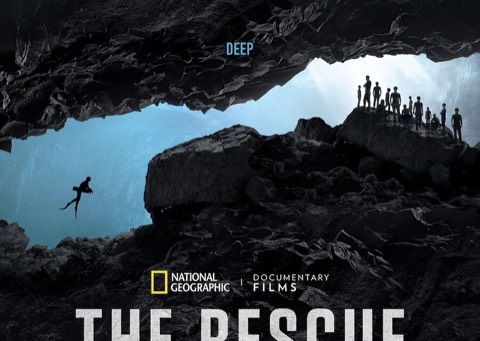

Double Exposure 2021
The seventh edition: October 13–17, 2021 · In person.
Held online for a second year.
There is no printed catalogue for 2021; this page is built from the festival website as the Wayback Machine saved it.
Migration & bordersLegal & safety for reportersFunding & distributionMiddle East & South AsiaWar, conflict & the militaryPolicingLatin AmericaHealth & medicine
Films
 United States vs. Reality WinnerOPENING NIGHT: United States vs. Reality WinnerOpening Night
United States vs. Reality WinnerOPENING NIGHT: United States vs. Reality WinnerOpening Night
The RescueCENTERPIECE: The RescueCenterpiece FleeSPOTLIGHT: FleeSpotlight
FleeSPOTLIGHT: FleeSpotlight AcceptedCLOSING NIGHT: AcceptedClosing Night
AcceptedCLOSING NIGHT: AcceptedClosing Night 3212 Un-RedactedBrian Epstein, James Gordon Meek, Andrew Fredericks2021 · 100 min
3212 Un-RedactedBrian Epstein, James Gordon Meek, Andrew Fredericks2021 · 100 min All These SonsBing Liu, Joshua Altman2021 · 88 min
All These SonsBing Liu, Joshua Altman2021 · 88 min ATTICAStanley Nelson, Traci A. Curry2021 · 111 min
ATTICAStanley Nelson, Traci A. Curry2021 · 111 min BurningEva Orner2021 · 86 min
BurningEva Orner2021 · 86 min Courtroom 3HAntonio Méndez Esparza2021 · 114 min
Courtroom 3HAntonio Méndez Esparza2021 · 114 min LuchadorasPaola Calvo, Patrick Jasim2021 · 92 min
LuchadorasPaola Calvo, Patrick Jasim2021 · 92 min Storm LakeJerry Risius, Beth Levison2021 · 85 min
Storm LakeJerry Risius, Beth Levison2021 · 85 min The First WaveMatthew Heineman2021 · 94 min
The First WaveMatthew Heineman2021 · 94 min The Slow HustleSonja Sohn2021, 2023 · 90 min
The Slow HustleSonja Sohn2021, 2023 · 90 min Writing With FireRintu Thomas, Sushmit Ghosh2021 · 93 min
Writing With FireRintu Thomas, Sushmit Ghosh2021 · 93 min
Shorts
- Day of RageMalachy Browne, David Botti2021 · 40 min
 Dial HomeCésar Martínez Barba2021 · 20 min
Dial HomeCésar Martínez Barba2021 · 20 min Do Not CirculateTiffany Sia2021 · 17 min
Do Not CirculateTiffany Sia2021 · 17 min ElenaMichèle Stephenson2021 · 30 min
ElenaMichèle Stephenson2021 · 30 min NonstopZac Manuel, Marta Rodriguez Maleck2021 · 12 min
NonstopZac Manuel, Marta Rodriguez Maleck2021 · 12 min Red Taxi2021 · 14 min
Red Taxi2021 · 14 min RIP SeniDaisy Ifama2021 · 13 min
RIP SeniDaisy Ifama2021 · 13 min- Since you arrived, my heart stopped belonging to meErin Semine Kökdil2021 · 21 min
 The BoxShal Ngo, James Burns2021 · 16 min
The BoxShal Ngo, James Burns2021 · 16 min The FacilitySeth Freed Wessler2021 · 26 min
The FacilitySeth Freed Wessler2021 · 26 min The Pegasus projectLaurence Topham2021 · 4 min
The Pegasus projectLaurence Topham2021 · 4 min The RiflemanSierra Pettengill2021 · 18 min
The RiflemanSierra Pettengill2021 · 18 min- The Vet VanSarah Jenks, Lizzie Mulvey2021 · 30 min
- They Won't Call It MurderThey Won’t Call It Murder2021 · 21 min
- To Be ReconciledJames Christenson2021 · 29 min
 UnrelinquishedAmina Waheed2021 · 26 min
UnrelinquishedAmina Waheed2021 · 26 min What You'll RememberWhat You’ll Remember2021 · 12 min
What You'll RememberWhat You’ll Remember2021 · 12 min Águilas/EaglesKristy Guevara-Flanagan2021 · 14 min
Águilas/EaglesKristy Guevara-Flanagan2021 · 14 min
Forum sessions and events
Saturday, October 13, 2018
- Sat Oct 13 · 9:30amPanel · DX²The Pandora Papers: Collaborating for Global and National ImpactScilla Alecci, Mary Inman, Seung-ho Choi, Axel Gordh Humlesjö, Minna Knus-Galán, Susanne Reber
Wednesday, October 13, 2021
- Wed Oct 13 · 9:45amPanelHARDBALL SEASONJames Harkin, Tiffany Sia, Laurent Richard, Drew Sullivan, Pádraig Hughes
- Wed Oct 13 · 10:00amPanelSame Story, Different ApproachKatie Benner, Dan Chen, Erica Green, Amanda Pike, Jesse Einstein
- Wed Oct 13 · 11:30amPanelMeet the Shorts PlatformsSarah Choi, Christine Kecher, Opal Hope Bennett, Caitlin Mae Burke, Charlie Phillips
- Wed Oct 13 · 12:00pmPanelFUNDING SHIFTPoh Si Teng, Carrie Lozano, Angelica Das, Gerry Leonard, Chi-hui Yang
- Wed Oct 13 · 1:00pmPanelThe Chilling Effect of Libel Defamation CostsLynn Oberlander, Lynn D. Carrillo, Kelli L. Sager, Dale Cohen, Jesse Einstein
- Wed Oct 13 · 1:15pmPanelAugmented Reality and the New Frontiers of JournalismEileen Guo, Jenna Pirog, Karthik Patanjali, Ziv Schneider, Ray Soto
- Wed Oct 13 · 1:45pmPanelWhere’s the Accountability in Documentary?Kristal Sotomayor, Molly O’Brien, Geeta Gandbhir, Brian Westley, Sonya Childress, Tim Schwab, Marissa Woods
- Wed Oct 13 · 2:45pmPanelFact Checking for FilmmakersHilke Schellmann, Darya Marchenkova
- Wed Oct 13 · 3:00pmPanelGrant Writing Workshop for FilmmakersViolet Du Feng, Hajnal Molnar-Szakacs, Dana Merwin
- Wed Oct 13 · 3:30pmPanelThe Surveillance TrilogyKatherine Fehr Chandler, Jesselyn Radack, Ines Hofmann Kanna, Sonia Kennebeck, Katie Townsend
- Wed Oct 13 · 4:30pmPanelValues and Ethics in Documentary: the Way ForwardRachel Lears, Talia Rosen, Michael Cascio, Raney Aronson-Rath, Gordon Quinn, Maggie Bowman, Sherry Simpson Dean, Marjan Safinia, Karim…
- Wed Oct 13 · 4:45pmPanelCollaboration in ActionLinda Jue, Tom Meagher, Lawrence Bartley, Duy Linh Tu, Elizabeth Herrera
Thursday, October 14, 2021
- Thu Oct 14 · 9:30amPanel · DX²Documenting the DocumentersNina Alvarez
- Thu Oct 14 · 9:45amPanel · DX²Grant Writing Workshop for JournalistsJane Sasseen, Shirley Abraham, Juliana Schatz Preston, Boyoung Lim, Joe Stephens, Cheryl W. Thompson
- Thu Oct 14 · 10:00amPanel · DX²Deep Fakery and SatireAdebayo Okeowo, Katerina Cizek, Henry Ajder, Stephanie Lepp
- Thu Oct 14 · 11:15amPanelMaking the Metaverse: Part 1, Case StudiesSparsh Ahuja, Violeta Ayala, Robert Hernandez, Abby Sun
- Thu Oct 14 · 11:15amPanelPro Bono Legal ClinicLoralee Sundra, Diana Palacios, Chuck Tobin, Theodore Frank, Sarah Matthews
- Thu Oct 14 · 11:45amPanelThe Short to Feature PipelineJiayan "Jenny" Shi, Elizabeth Lo, Leslye Davis, Quincy Ledbetter
- Thu Oct 14 · 1:15pmPanelMaking the Metaverse: Part 2, Reimagining the PresentKathryn Karaoglu Hamilton, Jesse Damiani, Andrew Wang, Sarah Wolozin
- Thu Oct 14 · 1:30pmPanel · DX²New Digital Security Platform for Filmmakers: a Walk-through and Training SessionOlivia Martin
- Thu Oct 14 · 3:00pmPanelHow to Address Authorship in Documentary and JournalismJennilie Brewster, Alexis Neophytides, Andres “Jay” Molina, Kenneth Brown, Poh Si Teng
- Thu Oct 14 · 3:30pmPanelUnder Cover of CovidNanfu Wang, Eric Deggans, Pádraig Hughes, Leita Walker, Blaž Zgaga
- Thu Oct 14 · 4:00pmPanelAfghanistan in CrisisCharles M. Sennott, David Cowan, Shoaib Fakhruddin, Kirshma Sharifi, Beth Murphy, Victoria Baranetsky
- Thu Oct 14 · 4:00pmWorkshopThe Art, Craft and Heart of a Great PitchJudith Helfand
Friday, October 15, 2021
- Fri Oct 15 · 9:30amPanel · DX²Constructing the New/s: Year OneJessica Clark, Farai Chideya
- Fri Oct 15 · 9:45amPanel · DX²PRE-PUBLICATION/RELEASE REVIEWShaina Ward
- Fri Oct 15 · 10:00amPanelSTUDENT PITCHJoseph Singer, Michael Fearon, Gabriella Canal, Yifan Wang, Yunbo Wu, Michaela Vatcheva, Guldana Talgat, Nicole Tsien, Lindsay Poulton…
- Fri Oct 15 · 11:30amPanel · DX²Staying Safe: Identifying, Understanding, and Preparing for RisksCaitlan Coleman, Margaux Ewen, Thomas Durkin
- Fri Oct 15 · 1:00pmPanelFilming the Near ImpossibleJoshua Glick, Matthew Heineman, Jimmy Chin, Elizabeth Chai Vasarhelyi, Seth Freed Wessler, Antonio Méndez Esparza, Dana Green
- Fri Oct 15 · 1:00pmPanelTrauma Workshop for Filmmakers with the Dart CenterLance Dixon, Jenni Morello
- Fri Oct 15 · 1:15pmPanel · DX²Balancing Act: Inclusive Storytelling and Legal ProtectionsAlan Adelson, Yoni Brook, Nicole Salazar, Sarah Matthews, Daniel Mayeda, June Cross
- Fri Oct 15 · 2:45pmPanelFuturist Writers Room: the Future of RealityRobert Earl Sinclair, Karim Ahmad, Alicia Bell, Jessica Clark
- Fri Oct 15 · 3:00pmPanel · DX²Beyond Inclusion: Challenging Entrenched InstitutionsJennifer 8. Lee, Richard Jean So, Sabrina Schmidt Gordon
- Fri Oct 15 · 3:15pmPanelLocal Journalism: of Deserts and RegrowthSusan Leath, Jennifer Preston, Madeleine Bair, Sarah Blustain, Letrell Crittenden, Beth Levison
- Fri Oct 15 · 4:00pmPanelBrown Bag Session 2James Gordon Meek, Jiayan "Jenny" Shi, Eric Matthies, Cynthia Galli
- Fri Oct 15 · 4:30pmPanel · DX²NFTs & CRYPTOCURRENCIESJulian Marshall, Matthew Iles, Michael Casey, Lance Koonce, Louise Carron
- Fri Oct 15 · 4:45pmPanel · DX²Witness Or Activist? Democracy Under SiegeCierra Hinton, Martin G. Reynolds, Gabriel Kahn, Jacob Simas, Cassie Haynes
Date not listed
- Screening event<em>ATTICA</em> REVISITEDVernal Coleman, Traci A. Curry, Stanley Nelson
- PanelFINDING YOUR STORY’S VOICE: A <em>MY FUGITIVE</em> CASE STUDYNina Gilden Seavey
- PanelINSIDE <em>DAY OF RAGE</em>Sheila S. Coronel, Haley Willis, Malachy Browne, Dmitriy Khavin
People
Filmmakers 42
- CLOSING NIGHT: Accepted
- Joshua Altman
- César Martínez Barba
- David Botti
- Malachy Browne
- James Burns
- Paola Calvo
- James Christenson
- Traci A. Curry
- Brian Epstein
- Antonio Méndez Esparza
- SPOTLIGHT: Flee
- Andrew Fredericks
- Sushmit Ghosh
- Kristy Guevara-Flanagan
- Matthew Heineman
- Daisy Ifama
- Patrick Jasim
- Sarah Jenks
- Erin Semine Kökdil
- Beth Levison
- Bing Liu
- Marta Rodriguez Maleck
- Zac Manuel
- James Gordon Meek
- Lizzie Mulvey
- They Won’t Call It Murder
- Stanley Nelson
- Shal Ngo
- Eva Orner
- Sierra Pettengill
- What You’ll Remember
- CENTERPIECE: The Rescue
- Jerry Risius
- Tiffany Sia
- Sonja Sohn
- Michèle Stephenson
- Rintu Thomas
- Laurence Topham
- Amina Waheed
- Seth Freed Wessler
- OPENING NIGHT: United States vs. Reality Winner
Panelists & speakers 194
- Shirley Abraham
- Alan Adelson
- Karim Ahmad
- Sparsh Ahuja
- Henry Ajder
- Laila Al-Arian
- Scilla Alecci
- Nina Alvarez
- Tetiana Anderson
- Raney Aronson-Rath
- Violeta Ayala
- Madeleine Bair
- Victoria Baranetsky
- Lawrence Bartley
- Pat Beall
- Alicia Bell
- Katie Benner
- Opal Hope Bennett
- Brian Bennett
- Sarah Blustain
- Maggie Bowman
- Jennilie Brewster
- Yoni Brook
- Kenneth Brown
- Malachy Browne
- Caitlin Mae Burke
- Gabriella Canal
- Lynn D. Carrillo
- Louise Carron
- Michael Cascio
- Michael Casey
- Katherine Fehr Chandler
- Dan Chen
- Farai Chideya
- Sonya Childress
- Jimmy Chin
- Sarah Choi
- Seung-ho Choi
- Katerina Cizek
- Jessica Clark
- Dale Cohen
- Erika Cohn
- Vernal Coleman
- Caitlan Coleman
- Sheila S. Coronel
- David Cowan
- Letrell Crittenden
- June Cross
- Traci A. Curry
- Jesse Damiani
- Angelica Das
- Leslye Davis
- Sherry Simpson Dean
- Eric Deggans
- Lance Dixon
- Thomas Durkin
- Jesse Einstein
- Antonio Méndez Esparza
- Margaux Ewen
- Shoaib Fakhruddin
- Michael Fearon
- Violet Du Feng
- Michael Fletcher
- Theodore Frank
- Cynthia Galli
- Geeta Gandbhir
- Joshua Glick
- Jon-Sesrie Goff
- Sabrina Schmidt Gordon
- Melissa Gira Grant
- Erica Green
- Dana Green
- Eileen Guo
- Kathryn Karaoglu Hamilton
- James Harkin
- Rahi Hasan
- Cassie Haynes
- Matthew Heineman
- Judith Helfand
- Robert Hernandez
- Elizabeth Herrera
- Cierra Hinton
- Harlo Holmes
- Pádraig Hughes
- Axel Gordh Humlesjö
- Matthew Iles
- Mary Inman
- Linda Jue
- Gabriel Kahn
- Ines Hofmann Kanna
- Christine Kecher
- Sonia Kennebeck
- Dmitriy Khavin
- Minna Knus-Galán
- Lance Koonce
- Yvonne Ashley Kouadjo
- Rachel Lears
- Susan Leath
- Quincy Ledbetter
- Jennifer 8. Lee
- Gerry Leonard
- Stephanie Lepp
- Marc Levin
- Beth Levison
- Boyoung Lim
- Elizabeth Lo
- Carrie Lozano
- Darya Marchenkova
- Julian Marshall
- Olivia Martin
- Sarah Matthews
- Eric Matthies
- Daniel Mayeda
- Tom Meagher
- James Gordon Meek
- Dana Merwin
- Andres “Jay” Molina
- Hajnal Molnar-Szakacs
- Jenni Morello
- Wesley Morgan
- Beth Murphy
- Stanley Nelson
- Alexis Neophytides
- Arionne Nettles
- Lynn Oberlander
- Adebayo Okeowo
- Molly O’Brien
- Diana Palacios
- Karthik Patanjali
- Charlie Phillips
- Amanda Pike
- Jenna Pirog
- Lindsay Poulton
- Jennifer Preston
- Juliana Schatz Preston
- Gordon Quinn
- Jesselyn Radack
- Ingrid Raphaël
- Jonas Poher Rasmussen
- Susanne Reber
- Martin G. Reynolds
- Laurent Richard
- Claudia Romano
- Talia Rosen
- Marjan Safinia
- Kelli L. Sager
- Nicole Salazar
- Claudio Sanchez
- Ricardo Sandoval-Palos
- Jane Sasseen
- Hilke Schellmann
- Ziv Schneider
- Tim Schwab
- Nina Gilden Seavey
- Charles M. Sennott
- Kirshma Sharifi
- Jiayan "Jenny" Shi
- Tiffany Sia
- Jacob Simas
- Robert Earl Sinclair
- Joseph Singer
- Richard Jean So
- Ray Soto
- Kristal Sotomayor
- Joe Stephens
- Bhawin Suchak
- Drew Sullivan
- Abby Sun
- Loralee Sundra
- Guldana Talgat
- Poh Si Teng
- Cheryl W. Thompson
- Chuck Tobin
- Katie Townsend
- Nicole Tsien
- Duy Linh Tu
- Brennan Vance
- Elizabeth Chai Vasarhelyi
- Michaela Vatcheva
- Leita Walker
- Yifan Wang
- Nanfu Wang
- Andrew Wang
- Shaina Ward
- Seth Freed Wessler
- Brian Westley
- Haley Willis
- Christopher Wilson
- Sarah Wolozin
- Marissa Woods
- Yunbo Wu
- Hao Wu
- Chi-hui Yang
- Blaž Zgaga